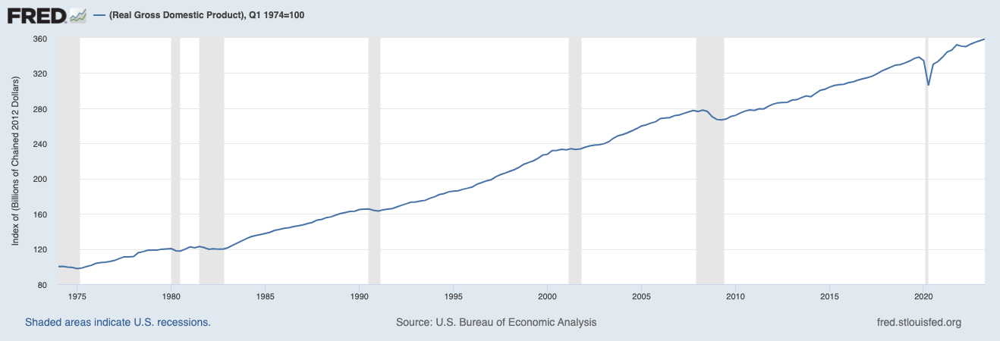
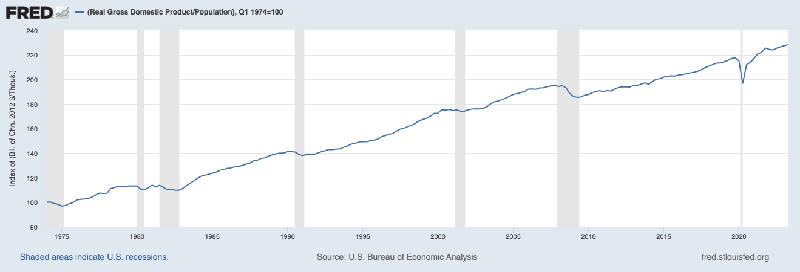
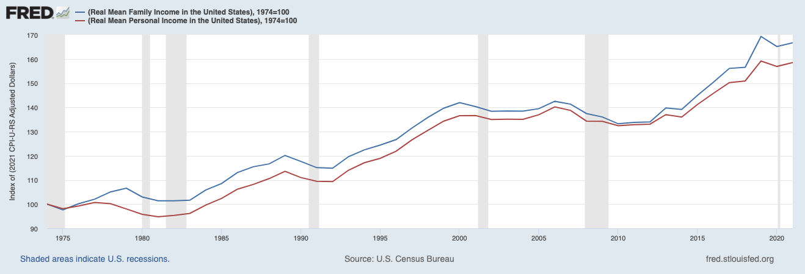
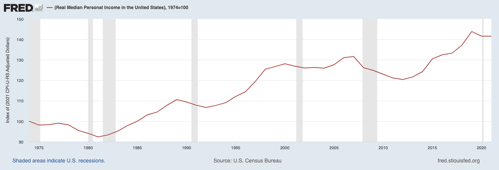

Week 2: My Early Beliefs and Economic Possibilities
weekly handout
Author
Brian Weatherson
Published
September 11, 2023
Abstract
Two of Keynes’s most memorable essays. First, his (possibly unreliable) memoir of his time discussing philosophy as a student, with emphasis on Moore’s lasting influence on him. Second, his upbeat assessment of the economic future, written just as Britain was ending a decade spent entirely in recession, and the Great Depression was about to start.
Introduction
We’re doing two pieces this week that are roughly the length of typical philosophy papers. And they both discuss, in their way, important philosophical questions. But as should be quickly clear from reading them, they are really nothing like you’d get reading Philosophical Studies or something. That’s deliberate on my part. One thing I want to think about over this seminar is how to write philosophically. In other classes you’ll probably cover some things on how to do well within the genre of the contemporary philosophy journal article, and look at what we think are the standout instances of the form. I want to spend at least a little bit in this class reading and thinking outside that genre. So today we have a memoir, and a piece of popular rhetoric.
It’s been very tempting in writing these notes to treat them as typical philosophy papers, and ask what’s the thesis statement, what’s the argument for that thesis, and so on. But I’ve tried to not just do that; while that approach has value, it might also lack something important. And maybe we can do something about that lack if we treat these papers on their own terms.
My Early Beliefs
Philosophical Background
It’s widely, if not universally, believed that there was something like a philosophical revolution around Cambridge, around the start of the twentieth century, launching something that became known as analytic philosophy. Just what that revolution consisted in, just what made analytic philosophy different from what came before, and which things that came after are still part of analytic philosophy, are all matters of considerable dispute. But the following theses all have non-trivial amounts of support.
Analytic philosophy is the research program launched by the work of the German mathematician Gottlob Frege (1848-1925), the English philosophers Bertrand Russell (1872-1970) and G. E. Moore (1873-1959), and the Austrian philosopher Ludwig Wittgenstein (1889-1951). The latter three were all based in Cambridge for much of their life, and they all had important interactions with Keynes. Just how central Moore is to this story varies; some commentators stress Frege, Russell and Wittgenstein as central, others put Russell and Moore as the central characters.
Analytic philosophy is based in analysis (as the name suggests). That is, it takes as a central task the idea of breaking down notions into their constituent parts as a guide to philosophical understanding and progress. The central metaphor here is chemical analysis, not real analysis in mathematics, or psycho-analysis.
Analytic philosophy is launched by the (undeniable) revolution in logic that Frege started, and Russell continued/popularised, and the (somewhat more contentious) rejection of idealism by Moore and (later) Russell. Idealism here is a very technical term; it refers to metaphysical theories that say the world is fundamentally mental, i.e., in some sense made of ideas. It’s not a theory about ideals or values, at least in the first instance. Just what idealism is, and whether there were good reasons to reject the things it might have been, remain matters of some dispute. But there is a linguistic claim that is completely beyond dispute: at the start of the twentieth century a huge proportion of philosophers in Britain would have described themselves as “idealists”; by the end almost none of them would have.
Analytic philosophy was primarily a revolution in philosophical work in logic, language, metaphysics, epistemology, and mind. It wasn’t particularly concerned with ethics, and it certainly wasn’t concerned with normative ethics. My (probably controversial) view is that one couldn’t possibly say that ethics was part of the analytic revolution because then you’d have to explain what was distinctively about 20th century ethics that wasn’t already there in Sidgwick and/or Marshall, and that’s not really possible. But set that point aside; the history of analytic is not a field given to consensus, but that the early analytic folks made little significant contribution to moral and political philosophy is widely agreed.
All of this makes the role of Principia Ethica, the book at the centre of “My Early Beliefs”, so mysterious. It is, obviously, by G. E. Moore, one of the canonical figures of analytic philosophy. And it is primarily about ethics. And, as we’ll see, it is in large part about the uselessness of analysis in ethics.
Principia Ethica isn’t really why Moore is part of the analytic canon as such. He’s there for two or three other things. One is his series of attacks on idealism; that’s clearly central to the canon. Another is his defence of “common sense”, and, relatedly, his (in)famously straightforward rejection of scepticism. The defence of common sense is related to the rejection of idealism. One of the most prominent uses of common sense is Moore’s argument that McTaggert’s idealist theory of time implies that it is false that Moore had breakfast that day before he had lunch. And Moore argues it is much more plausible that he had breakfast before he had lunch than it is that the premises of McTaggert’s arguments are correct. (In fact he identifies the particular premise that he is sure is less plausible than the breakfast claim.) The third reason Moore is part of the analytic canon is that the term ‘analysis’, in this context, is one he popularised.
But none of this is ethics. Principia Ethica is a widely read book in contemporary philosophy, even if it isn’t always taken to be part of the analytic canon. But it’s not read for it’s ethics strictly speaking. Rather, it’s read for its meta-ethics. The ethics/meta-ethics distinction is blurry, but roughly meta-ethics is about the metaphysics of ethics (what is it for a moral claim to be true, if it is true), and about the theory of mind/language that is appropriate for ethics (what is it to accept/endorse a moral claim). The second most discussed feature of Principia Ethica these days is Moore’s conclusion, that moral thought and talk concerns a distinctive non-natural realm; moral properties really exist, and they are not identical to any natural property, and they are simple and unanalysable. The most discussed feature of Principia Ethica is Moore’s argument for that conclusion, because even people who don’t accept (or frankly understand) what Moore’s conclusion is, find his argument for that conclusion important. Indeed, if we were doing the history of this department we’d spend a lot of time on that argument. But we’re not, because (at last) we can get to what moved Keynes.
The book ends with two chapters which heavily influenced Keynes, in opposite directions. The chapter on the Ideal I can’t possibly describe better than Keynes does. I’ll just note three things about the principle of organic unities. One is that it’s basically what we’d now call value holism. The second, related point, is that it means that value is really not analysable. You don’t understand the value of the whole by understanding the value of the parts. The third is that I don’t really see what’s valuable in the idea of an organic unity that isn’t already implicit in the Walras/Jevons/Marshall marginalist theory of value. It seems to me implicit in marginalism that the fundamental bearers of value are whole states of affairs - indeed temporally extended states of affairs as Keynes notes when he presses for an intertemporal principle of organic unity.
The chapter on Ethics in Relation to Conduct in some ways influenced Keynes even more. It is not much of an exaggeration to say that he wrote the Treatise on Probability as a reaction/response to it. Moore held the following views, many of which Keynes would agree with.
Ethics is fundamentally about producing good states of affairs. In this respect he agrees with the 19th century consequentialists, Bentham, the Mills, Sidgwick, etc, though of course they did not think love and beauty were the main goods in the world.
Since we can’t know what actions will actually produce goods, we should instead follow rules that will produce the most good over time.
But the world is too complicated, we can’t even work out for ourselves which rules those are.
So we should fall back on conventional morality.
In “My Early Beliefs”, Keynes says that they rejected step 1 of this. This is something that Woolf in particular objected to in Keynes’s story. And honestly it’s a little hard to believe that Keynes did not actually believe that producing good states of affairs (or at least good-sub-Moore states of affairs) was actually good. And Keynes bought step 2, and step 3. What he objected to was step 4. It would have somewhat crimped his lifestyle if he’d accepted it. (Just how promiscuous Keynes was when he was younger is a matter of some scholarly dispute, but a reasonable answer is very.) And he developed an entire theory of probability to say why 4 didn’t follow from 3.
The Analytic Method
But none of this is telling us what is distinctively analytic about Moore, or about Keynes’s group. And here it helps I think to stop thinking about what these philosophers said, and instead think about how they said it. If we try to identify analytic philosophy with a thesis, or set of theses, it becomes incredibly hard to say what analytic philosophy is. There aren’t many theses that the analytic philosophers agreed on, and for those they did, there are plenty of people who preceded them who agreed with them too. But if you identify it with a way of doing philosophy, it is easier to see some distinctive trends.
Look at all the things Keynes describes as being part of their approach circa 1903.
The reliance on intuitions as a key source of evidence.
Relatedly, the reliance on authority and/or manifest incredulity (what became “the blank stare”) as a counter.
The obsession with precision; “If it appeared under cross-examination that you did not mean exactly anything, you lay under a strong suspicion of meaning nothing whatever.”
The conversion of big picture questions (e.g., is love a central part of value in the universe) to really detailed, almost esoteric ones (e.g., if A loves B, but only because they have attributed some of C’s attributes to B, is that better or worse than if they’d made up these attributes from whole cloth).
The long paragraph consisting mostly of questions they were asking themselves at the time is a fascinating Rorschach test. As I was reading through the list I went from thinking, “That’s a funny parody of the kind of things we’d talk about in common rooms” to “That’s actually an interesting question” to “That’s one of the biggest philosophical questions there is and something I’ve spent years thinking about”. And by the time I got to the third I started to wonder how much of a parody the earlier questions really were.
At a bigger picture, over this whole section of the paper I was having two thoughts that Keynes might have described as ludicrously incompatible. The first was that these were our people, this was how we do philosophy, that (to use some outdated internet lingo) I could point to these passages and say “One of us! One of us!”. The other was that this didn’t sound so different from how philosophers from elsewhere would unfairly parody the hyper-analytic departments of recent times, like ANU or MIT. Maybe those parodies weren’t so unfair after all.
It’s not that this kind of approach to philosophy was invented for the first time in history by G. E. Moore circa 1898. It doesn’t sound that different to Socrates, or at least (as Keynes alludes to) to the Socrates of the Dialogues. I bet some medieval thinkers resembled this too, especially Abelard, though maybe also some who weren’t subject to quite so much violence. But I do think there’s a style here, something that was new and which has persisted, more at some places, less at others, through the present.
Content
At risk of spoiling the fun of thinking about the themes and style of the paper, I want to turn to a question about content. Keynes thinks that they were led seriously astray by a philosophical mistake they made. But I’m not sure what exactly the mistake was, and there are two interestingly different choices.
First, a note on the ‘they’. The memoir starts with a story of Keynes and Russell having a disastrous meeting with the novelist D. H. Lawrence. Keynes fusses a little over the date, insisting it was 1914 not 1915. (A detail he’d be unlikely to get wrong; his life was very different between those two years.) But then the bulk of the paper swings back to discussing events a decade earlier, around the time of the release of Principia Ethica. So which time is he talking about, or does he think the two are all part of a single thread.
In his autobiography, Leonard Woolf spends a long time responding to Keynes’s memoir, which clearly annoyed him no end. Woolf idolised Moore; he describes Moore as the only “great man” he ever met. And I think he thought the memoir was unfair to Moore. This seems like a simple misreading; Keynes is pointing out that Moore did have a chapter on how being good and doing good related, and they all ignored it. Woolf also, hilariously, responds to Keynes’s claim that while they all treated this philosophy like a science, it was really a kind of religion, by insisting that no it really was a science. But there’s one point he makes that I thought might be historically interesting. He conceded that by 1914 (though certainly not 1915) the self-absorption that Keynes describes was a characteristic of their group. He just insists that nothing of the sort was true in 1903, and Woolf attributes some of this change to them all moving to London. I think Keynes’s picture is that the way they all were in 1914 was baked in by their upbringing a decade earlier, but one could disagree here.
Anyway, I thought that the memoir was attributing to Keynes and his friends two related but distinct theories, which I’ll call methodological individualism, and epistemological individualism.
The first is the theory that the right way to understand social facts is by starting with individuals, and regarding everything else as reducible to, and understandable in terms of, individual thoughts and deeds. So think of standard game theory, with everyone looking out for themselves and maximising a value function, as a paradigm of this kind of theory. And Marxist theories, with the social class as being more fundamental than the individuals who make it up, as a paradigm of the opposing view.
The second, epistemological individualism, is the thought that each person should decide for themselves what they think the right moral/social/political theory is, and the fact that others have come to different views, or that different views have become embedded in society, is of no epistemological significance. This is a kind of anti-conservative view; everything is constantly up for grabs.
Now I think it’s the latter that Keynes really thinks was wrong looking back on their earlier lives. That’s why they risk upsetting the thin crust that humanity resides on. But sometimes it looks like he is also rejecting the former, which would be very significant for thinking about economic theorising. As you may know, one of the big debates in mid-to-late 20th century economics was whether an individualistic foundation could be given to broadly Keynesian theories. Is he saying here that he didn’t care if they could? We might come back to this when we get to the economics.
As well as these procedural points, Keynes also thinks that he and his younger friends were making a substantive error. They were underestimating the fact of, and importance of, irrationality in human conduct. So they were dismissing the importance of things, either things like emotions at the individual level, or structures and the social level, which arise in response to this kind of irrationality.
Hopefully the importance of all of this to the present day should be clear. We, as a discipline, tend to look favourably on methodological individualism, epistemological individualism, and on explanations which downplay irrationality. Are we making the same mistakes as Keynes’s younger self, and are we subject to the same (somewhat, but only somewhat, unfair) criticism that Lawrence launched at them?
There is one interesting connection to 21st century economic work here. One of the fairly resilient experimental findings in recent years is that people are bad at a certain kind of inference. The inference goes: This person is doing X, which doesn’t make sense to me. So this person has some evidence that I don’t have. And that evidence is relevant to what I should do. So I should adjust my behaviour accordingly. The inability to (reliably) make this inference is, according to some plausible-looking theories, part of the explanation for various inefficient (i.e., money-losing) behaviors in auction experiments, and possibly in real-world auctions.
Now the inference the contemporary experimental economists are interested in is one where the observed behaviour of X makes sense given the evidence, and the person doing X knows this. Keynes, I think, is interested in real-life cases where doing X does make sense, but possibly the person doing doesn’t quite understand why. The thing about the wisdom of ancients is that the ancients weren’t in fact that wise. But they stumbled on to various practices that worked, and worked because of deep facts about human nature. Even if we can’t see the value in them, even if they couldn’t see the value in them, we should start with a presupposition that the practice has some value, and serves some purpose. Maybe we’ll figure out that the practice was a very roundabout way of reaching some actually desirable end, and we can do better at bringing about that end some other way. But simply saying that in a perfectly rational society we wouldn’t have that practice, that’s not much reason to abolish it.
OK, last thing about this memoir, and it’s a question I don’t have a good answer to. Who are the Benthamites? They are clearly the villains of the piece. But look how many different groups they are connected to. At one point Keynes groups together the Bethamites and the purveyors of conventional morality. At another he says that they are the intellectual inspiration for Marxism. (I think in context this means Bolshevik Marxism, but I could be wrong about that.) And at yet another they are described as only interested in economic criteria. No one can really meet all those descriptions can they? Is Keynes just using it as a general term of disapprobation, like the way ‘neo-liberal’ is often used? I really don’t know.
Economic Possibilities for Our Grandchildren
So, why do we work so much? I don’t think Keynes would entirely buy into the following reasoning, but he comes close to saying the following things.
The point of work is to generate what’s necessary for survival.
Since the economy produces many times more than it used to, we need to work many times less in order to generate what’s necessary for survival.
So, we should all be working 5-10 hours a week.
Now 3 isn’t true, and it doesn’t look like being true any time soon. But what goes wrong with the argument?
Background: The Malthusian Trap
For most of human history, premise 1 was simply true. There was a sharp cap on the population in most places given by how much food could be produced. If there were a few good years, and more people didn’t starve to death, this was eventually a disaster because when things returned to normal, people did starve to death. The land had to be worked as hard as it could, by any hands that were available to work it, or the result would be famine.
Now there are some caveats to this. It didn’t mean that everyone worked 90 hour weeks from the time they could work until death. The cycle of growing and harvesting crops means that there are times when there isn’t actually much to do. Pre-industrial folks definitely worked hard, especially at harvest time, but it wasn’t all work all the time. They were always running up against economic constraints, and if things went wrong they would starve, but providing more labour didn’t always solve the “economic problem”. So while they worked a lot, they could have worked more. And, in the early industrial era, when work was not tied to agricultural cycles, they did.
There were occasional spots in human history where we weren’t, collectively, running up against the limits of food production. Maybe the Roman Empire got there, especially when the Carthage-Rome trade system was at its peak. Certainly Europe got there in the immediate aftermath of the Black Death, when evidence suggests that wages, and maybe health, were as high as they’d be for centuries either side. Losing half the population to disease does actually stave off famine for quite a while. And as the centuries rolled on through the Renaissance, we saw more wealth created in the form of extra luxuries for the very rich, and occasionally in better infrastructure, especially roads and ports. We’ll come back to the wealth of the wealthy in a bit. But still, through much of human history, most people were getting just enough to survive.
Recent historical work suggests this period went on much longer than we’d traditionally thought, and possibly longer than Keynes thought. I’m relying here on Brad DeLong’s recent book Slouching Towards Utopia, which I think is reliable, but could be wrong. Anyway, he suggests that as late as 1870, working class living standards (at least in north-western Europe and its outposts) were not appreciably better than they’d been in pre-industrial times. (I’ll borrow his phrase “Dover-Circle-Plus” to mean places within about 150 miles of the port of Dover, and their settlements, including the US and Australia, throughout the world.) This is quite amazing if true. The industrial revolution had been going for centuries by this point. The wealthy were getting astronomically rich, though things would improve yet more for them as the Gilded Age kicked in. And, and I think this is what threw academic observers at the time, by the mid-19th century, Britain had a real middle-class, who were much better off than all but the wealthiest people of the 18th century and earlier. But, according to DeLong and other recent historians, these gains only seeped down to the working classes starting around 1870. Now maybe that’s not too surprising if you’ve read Dickens, but I think it’s different to the standard story which says that the Dover-Circle-Plus as a whole started getting richer in the 18th century, and not just its wealthiest members.
I’m bringing all this up because I suspect Keynes, for all his brilliance as an economic historian, didn’t fully appreciate how distinctive his own time was. I think he was led by some fallacies of aggregation to see the progression from the factories of the mid-18th century to the world of the summer of 1914 as a steady rise in standards of living. And that meant he thought he had a large inductive base for which to infer how things would go once the troubles started in August 1914 had sorted themselves out. But if what was really true was that we had an incredible jump from 1870 to 1914, something unlike anything the world had seen before, it would be reasonable to worry that the mistakes of August 1914 didn’t just interrupt this jump, but destroyed for good something rare and valuable.
My own (not particularly well informed) take is that something like the latter is actually true. The world of 1870-1914 was a distinctive thing, and incredibly valuable, at least for the people living in the Dover-Circle-Plus. Once it was destroyed that August, it never came back. What we had from 1946-1973 was a rather different, but also incredibly valuable, system, which was lost somewhere between the Vietnam War and the oil crises. And then, especially in East Asia, we’ve had some different again booms, which perhaps one or other of these Dover-Circle-Plus booms. But these are all not normal; normal is much slower steadier growth, which might not trickle down to the working classes at all. This is a very pessimistic take though, let’s return to Keynesian optimism.
Work as a Psychological Need
Keynes has what might look like a very strange reason for rejecting the argument. He thought that work filled a psychological need for people as well as an economic need. In Moorean terms, work has an intrinsic as well as an instrumental value. And his response to that was to say that we’d probably move to a world where many people worked 15 hours a week, which would be enough to fulfil the sense of purpose, but not divert them from living good lives.
Actually, it’s not entirely clear whether he thinks this is a long run solution. It’s possible he thinks the psychological need for work is a legacy of being brought up in a certain kind of world, where fair is foul and foul is fair. It’s possible his deep view is that if we hadn’t been brought up in a world where work was valourised because it is necessary, we’d be happy to work even less.
So this raises all sorts of interesting questions about value, and is in some ways the most philosophical part of the whole thing. It relates, for instance, to the lecture Appiah did here I think last year on Work. And it relates to the Moorean theory of value that was a focus of the first half today.
Would a human life that consisted entirely in non-work, consisted entirely in the things that Moore said were valuable like loving relationships and the appreciation of beauty, be missing something that work provided?
And I think at some level Keynes really thinks the answer is no. And intuitively I think that too. But that’s funny coming from both of us because if we had more leisure time, we’d spend them on things that others would regard as work. I’d probably be reading philosophy, and maybe even scribbling out things like blog posts, without getting paid for it. Keynes used the little spare time he had in the 1930s to literally build a theatre in Cambridge; it opened just after the General Theory was published. It’s not exactly a life of relaxation.
But even people who do things work-like in their spare time don’t mimic work. They don’t grade papers, or process email, for fun. People who repair cars for fun don’t want to deal with the kind of repetitive work involved in fixing random strangers’ cars, like a paid mechanic has to do. I think that people, even people who have hobbies that overlap with what others do for paid employment, can get by fine without paid work. But maybe that’s a shallow take on human nature, and I’d be interested to know what others think.
Coordination Problems
The 40-ish hour work week has proven remarkably sticky over the last 100 years. Some places, especially in western Europe, have pushed towards slightly shorter days. The pandemic led some places to move towards 4 day work weeks. But if it took a literal pandemic to get that amount of movement in the work week, I don’t see the path from here to 15 hour weeks.
The problem is that there are reasons for having most everyone working at the same time. There are aggregation effects from having coordinated business hours. Unilateral reductions in the work week are complicated because of these benefits.
Still, if that was the only thing wrong with Keynes’s argument, there would be an easy solution. If we all wanted to use a doubling in productivity to halve our work commitments, we could all retire earlier, and have work lives that were half as long.
And actually that sort of is what happened during the Trente Glorieuses after World War II. The retirement age fell to early 60s, even though life expectancy was rising. We did take extra leisure time, just in longer retirements, not shorter work weeks.
Given the coordination problem involved in running a modern economy, that seems like a sensible idea. And it suggests an alternative prediction to Keynes’s 15 hour week, one that agrees with the spirit but disagrees with the letter. Retirement ages would keep on falling, into the 50s, and maybe into the 40s.
Obviously that has not happened. Indeed, as you’ll have seen from the protests in France, retirement ages are rising there. The same is happening in Australia, where the previous gendered retirement age (65 for men, 60 for women) is in the process of moving to 67 for everyone. If early retirement was the Economic Possibility for our Grandchildren, it is moving further and further away.
Industry and Service
Keynes’s essay is afflicted by a focus on a relatively narrow section of the society/economy: namely men who work in industrial jobs. By this I mean to include not just factory workers, but also miners, agricultural workers, and others who work with heavy machinery. In those industries, efficiency gains from the use of machinery were incredible, and while they have slowed, they have increased. But while that was a significant slice of the economy in Keynes’s time, especially of the male part of the economy, it isn’t everyone.
The economic possibilities our grand-daughters may have been looking forward to was a freedom from the drudgery of domestic work. We can helpfully divide that into two parts: caring for houses and caring for children.
You might think caring for houses is also something where the incredible advances in machinery help; dishwashers and washing machines and electric vacuums are much better than what came before them. But there’s a catch. As best I can tell, the effect of these inventions was to increase the expectations of cleanliness. (I can look up the references for this if you’re interested; I don’t have them to hand.) I gather that modern historians do not think that washing machines decreased the amount of time women spent on washing work in the home; the productivity gains were entirely captured by increased expectations of cleanliness. That is, if it got 4 times easier to wash a shirt, the expectation was that it would be washed 4 times as often. Maybe there’s a limit here - you can’t wash a business shirt more than once a day - and maybe we’re starting to see some gains. And there are some weak hints that the gender balance of this work is ever so slowly starting to change. But productivity gains didn’t lead to more leisure here.
Caring for children is a different matter. On the one hand, the child care industry is much more developed than it was a century ago. But there are two big ‘on the other hands’. First, that industry mostly serves women in the workforce. Perhaps it need not, and the in Keynesian utopia women (or men who did their fair share of child rearing!) could use child care as a way of increasing leisure. Second, there really are limits on how much efficiency there is to wring out of the system. It’s really hard with anything like modern technology to do better than four infants to one child-minder. Maybe some kind of AI miracle will help with this, but I don’t see it happening any time soon. We have hit a pretty hard limit to productivity here.
And that’s true in service industries in general. Haircuts have gotten somewhat more efficienct; it’s a lot easier to clean the equipment now than it was a hundred years ago. But really we’re tinkering around the edges here. The efficiency gains in the hair-cutting industry have been literally marginal for centuries. It’s a little easier to clean hotel rooms than it was a century ago, but not really much easier than it was 50 years ago. The big efficiency gain there was the pandemic move to not cleaning the rooms.
There’s a familiar story here. As the production of goods gets more and more efficient, more and more of the labour force moves into the production of services. But the production of services does not have the productivity growth of the production of goods. So the economy as a whole (by a kind of Simpson’s Paradox effect) stops growing as rapidly.
Distribution
All that said, it’s time to look at some actual numbers. It’s hard to get data going back to 1930, especially for some of the stats I’m going to care about. But we can get 50 years of US data, going back to 1974. If Keynes was right and the economy would grow by a factor of 8 over 100 years, and we all got 8 times richer over 100 years, that should mean it grows by nearly 3 times over 50 years. (We’re looking for square root of 8 growth here.)
Let’s start with real GDP. We don’t care about ‘growth’ that’s just inflation, so everything here will be in real terms. (There are very big philosophical questions about just what it means to put things in real terms, and if people are interested we can do a week or two on that at the end of the semester. But not now.) Here is US GDP from 1974 onwards, setting the value in 1974 to 100.

Real GDP of the US, 1974-present
That looks pretty good. We’re as a whole 3.6 times richer than 50 years ago, well over the 2.8 that we need for a factor of 8 growth per century. But hang on, the US also has many more people than 50 years ago, and just having more of us doesn’t make us wealthier. Let’s put that in per capita terms to see how much there is to go around.

Real GDP per capita of the US, 1974-present
We’re already under the pace needed for factor of 8 growth per century. But still, growing by a factor of 2.3 per 50 years would be factor of 5 per century growth. Not Keynes’s 8, but enough to get to his 15 hour week.
But who gets that wealth? Remember what happened before 1870; Britain got much richer, but most British people did not. A quick first check is to see how much of that money is going to labour. So here is a measure of average real wages over time.

Real mean personal/family income in the US, 1974-present
I’ve done two graphs there, one for average family income, the other for average personal income. The family income has risen a little faster than the personal income, which actually kind of surprises me; I thought households were getting smaller, so the move would be in the other direction. But the difference between them isn’t huge. What is huge is the difference from the previous graph. The percentage rise is only half of what we saw on the previous graph. A huge proportion of the gains from increased productivity have gone to owners of capital, and more people other than labour. Since most people get most of their income from labour, that’s already part of the story as to why we’re not all on holiday all the time.
But even that doesn’t tell us everything. If LeBron James gets $50 million per year (and is probably underpaid relative to what he brings to the company), that alone is a 50 cent or something a year increase in average household income. But most people do not see those extra 50 cents from LeBron, or any other high income earner. A better measure of how most people are doing is median income. That still leaves out a lot of people, but it’s a start. Here’s how it looks.

Real median personal income in the US, 1974-present
The source I’m getting this from only does median family income back to 1984, but the shape of the graph is the same. And the rise, over a 50 year period, is 40%. It’s considerably under 1% a year. (Note 1% a year for 50 years is about a 65% rise, like we saw with the mean.) It’s hard to change your lifestyle over a less than 1% a year increase.
It might be hard to tell from this graph, but if you add the gains from the 1992-2000 boom, and the 2012-2020 recovery (it really didn’t feel like a boom at the time), you get more than the gains for the whole period. Outside of those two eight year periods, the median worker has perhaps gone slightly backwards during the last half-century.
So there’s a simple answer to the question. We all still work a lot because while America got a lot richer, most Americans did not get particularly richer.
Consumption
Still, 40% isn’t nothing. Where did that 40% go? We don’t even work 40% less than a half-century ago. Or, at least, we didn’t before the pandemic; maybe the pandemic has changed things. Still, where did that 40% go?
That’s an easy one. It went on consumption. Comparing the median workers in 2020 and 1974, the 2020 version has:
A bigger house
A much bigger car
Vacations to further away places
More and bigger electronics
Better health care, especially in old age
If it was just the first two, the following somewhat unfair characterisation of the US worker would be true: they’d rather work more hours than drive a smaller car to work, or come home to a smaller house. And then we’d have the answer to Keynes; he just didn’t realise that people had those preferences. Or, he did and he disapproved. Come back to that thought in a bit.
Because the last three do complicate the story somewhat. For somewhat sensible reasons to do with coordination, to the extent that we’ve taken increased leisure time, we’ve taken it in old age. And to have pleasant Moorean states of mind in old age, it helps to have pharmaceutical assistance. (I guess some people think that helps at any age, but I couldn’t possibly comment.) The bigger electronics can be used for all sorts of things, but two of the things they are in fact used for are building better personal relationships - long-distance communication is the first thing people are looking for when they get electronics - and appreciation of beauty, or something beauty-like. (Does watching Leo Messi or Sam Kerr play football involve appreciation of beauty? Eh, maybe. Leave that one for the aestheticians.)
One final thought to leave on. Keynes, I think, was worried that the productivity gains would be sucked up by positional goods. Keynes was very much not a preference satisfaction theorist of welfare. If someone wants a bigger house solely because it is very important to them that they have a bigger house than their neighbour, that’s not a way in which satisfying their preferences increases their welfare. And even if one is a preference satisfaction theorist, if people have preferences for positional goods, the in the aggregate extra productivity is not going to help, because some people will disprefer the increase wealth of their neighbours. Is that’s what is going on with the American obsession with the size of cars and houses? That strikes me as a good and important question, and not one that we can answer from the armchair. But it might be the final piece of the puzzle. We don’t work less because (a) we’re not getting paid that much more, and (b) we have positional desires that will go unsatisfied if we work less. That’s a depressing note to end on, and I hope that others in the class have more optimistic takes on Keynes’s economic possibilities.